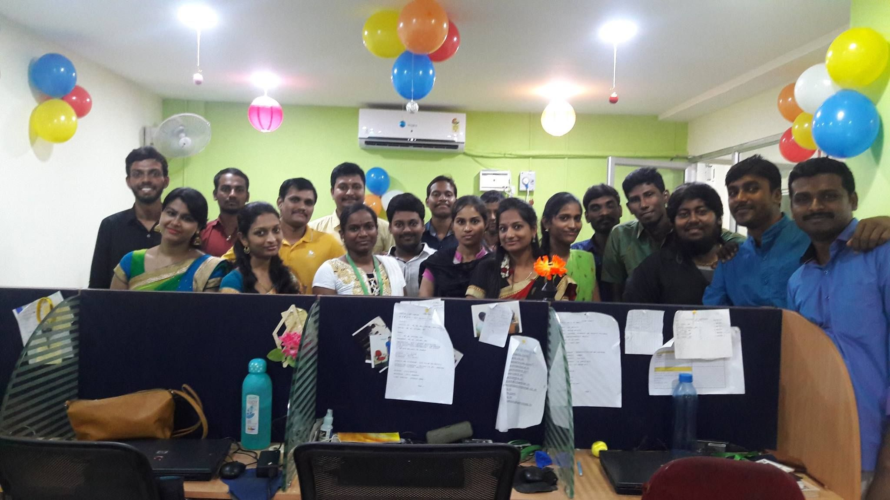
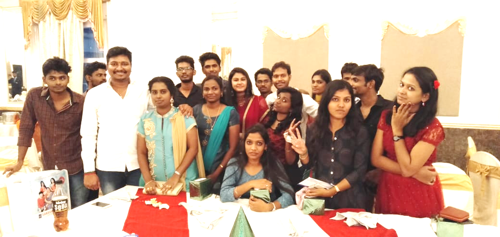
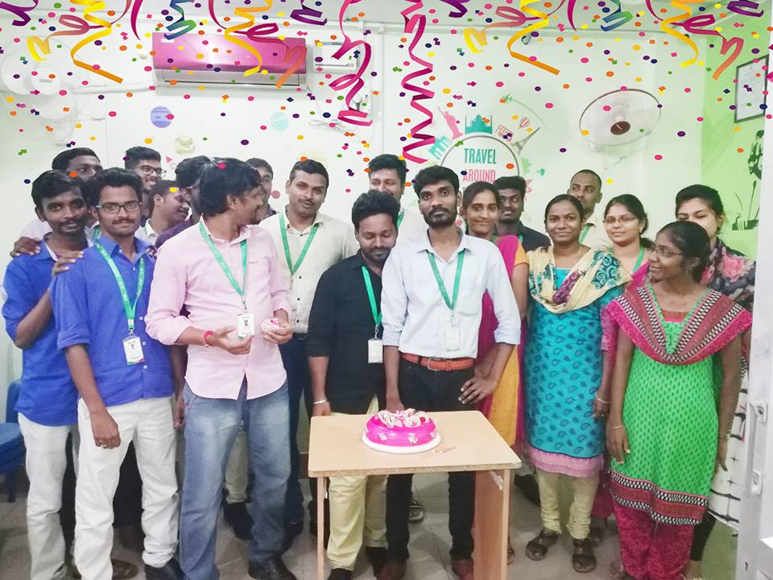
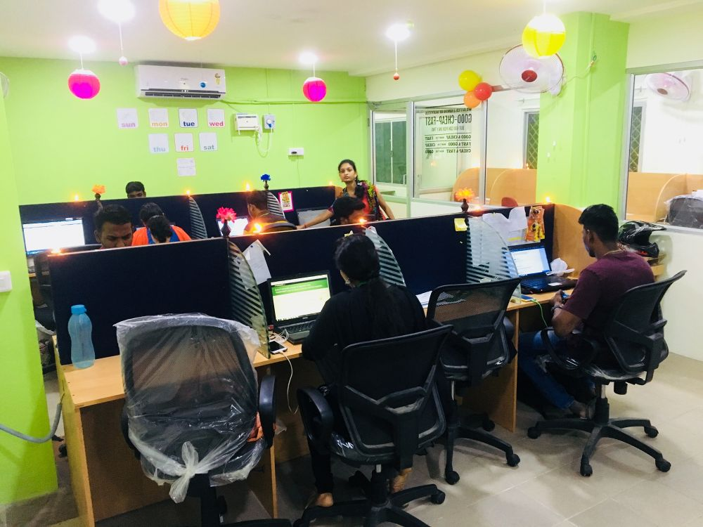

{% extends 'base.html' %}
{% load bootstrap5 %}
{% block body %}

<style>
    * {box-sizing: border-box}
    body {font-family: Verdana, sans-serif; margin:0}
    .mySlides {display: none}
    img {vertical-align: middle;}
    
    /* Slideshow container */
    .slideshow-container {
      max-width: 1000px;
      position: relative;
      margin: auto;
    }
    
    /* Next & previous buttons */
    .prev, .next {
      cursor: pointer;
      position: absolute;
      top: 50%;
      width: auto;
      padding: 16px;
      margin-top: -22px;
      color: white;
      font-weight: bold;
      font-size: 18px;
      transition: 0.6s ease;
      border-radius: 0 3px 3px 0;
      user-select: none;
    }
    
    /* Position the "next button" to the right */
    .next {
      right: 0;
      border-radius: 3px 0 0 3px;
    }
    
    /* On hover, add a black background color with a little bit see-through */
    .prev:hover, .next:hover {
      background-color: rgba(0,0,0,0.8);
    }
    
    /* Caption text */
    .text {
      color: #f2f2f2;
      font-size: 15px;
      padding: 8px 12px;
      position: absolute;
      bottom: 8px;
      width: 100%;
      text-align: center;
    }
    
    /* Number text (1/3 etc) */
    .numbertext {
      color: #f2f2f2;
      font-size: 12px;
      padding: 8px 12px;
      position: absolute;
      top: 0;
    }
    
    /* The dots/bullets/indicators */
    .dot {
      cursor: pointer;
      height: 15px;
      width: 15px;
      margin: 0 2px;
      background-color: #bbb;
      border-radius: 50%;
      display: inline-block;
      transition: background-color 0.6s ease;
    }
    
    .active, .dot:hover {
      background-color: #717171;
    }
    
    /* Fading animation */
    .fade {
      animation-name: fade;
      animation-duration: 1.5s;
    }
    
    @keyframes fade {
      from {opacity: .4} 
      to {opacity: 1}
    }
    
    /* On smaller screens, decrease text size */
    @media only screen and (max-width: 300px) {
      .prev, .next,.text {font-size: 11px}
    }
    </style>
    
    <div class="d-flex justify-content-center">
    
    <div class="mySlides fade">
      
      <div class="text"><h4> grow higher and higher by each day</h4></div>
    </div>
    
    <div class="mySlides fade">
      
      <div class="text">Caption Two</div>
    </div>
    
    <div class="mySlides fade">
      
      <div class="text">Caption Three</div>
    </div>

    <div class="mySlides fade">
      
      <div class="text">Caption Four</div>
    </div>
    
    <!-- <a class="prev" onclick="plusSlides(-1)">❮</a>
    <a class="next" onclick="plusSlides(1)">❯</a> -->
    </div>

    <div style="text-align:center">
      <span class="dot"></span> 
      <span class="dot"></span> 
      <span class="dot"></span> 
    </div>
    <br>
    

    <footer>
    <div class="d-flex justify-content-center">
      <div class="container">
      <h4 style="text-align: center;" id="about">Feedback</h4>
      <form method="post">
          {% csrf_token %}
          {% bootstrap_form form%}
          <input type="submit" value="submit" class="btn btn-warning">
      </form>
      </div>
    </div>
    </footer>
    
    
    <script>
    let slideIndex = 0;
showSlides();

function showSlides() {
  let i;
  let slides = document.getElementsByClassName("mySlides");
  let dots = document.getElementsByClassName("dot");
  for (i = 0; i < slides.length; i++) {
    slides[i].style.display = "";  
  }
  slideIndex++;
  if (slideIndex > slides.length) {slideIndex = 1}     for (i = 0; i < dots.length; i++) {
    dots[i].className = dots[i].className.replace(" acte", "");
  }
  slides[slideIndex-1].style.display = "block";  
  dots[slideIndex-1].className += " active";
  setTimeout(showSlides, 2000); // Change image every 2 seconds
}
    </script>

{% endblock %}